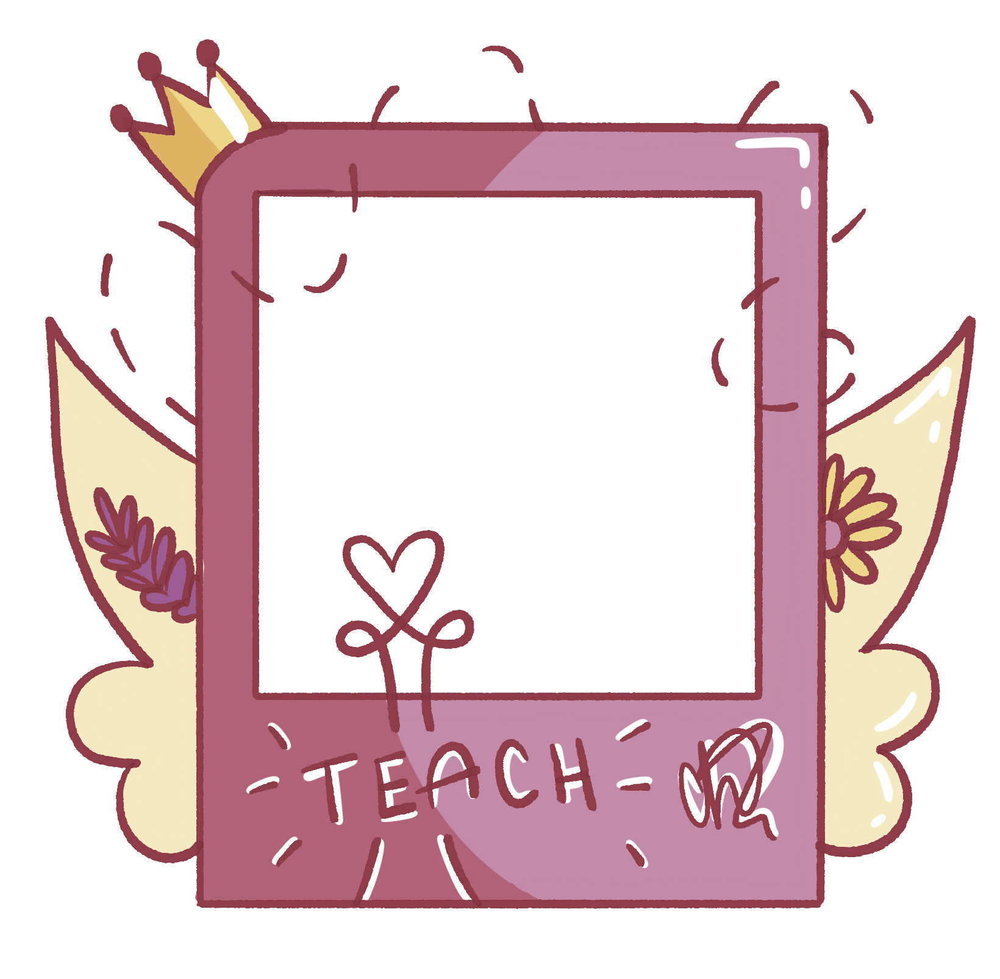
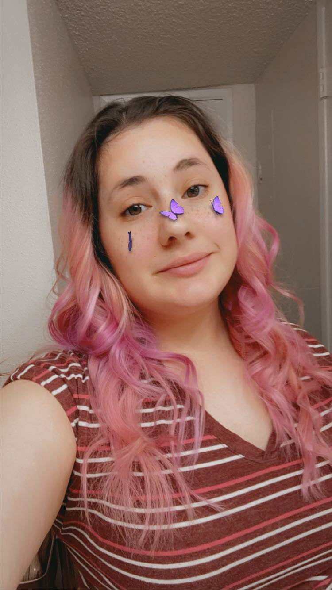

My name is Carlota Haro Haro and I am an Art Education major at Arizona State University. I am a Mexican American woman with a dream to become a K-12 Art Teacher. My dream stems from my first positive art experience in elementary school. It was the first time I had ever felt the freedom to create the way I wanted. I want to provide future students the opportunity to love art and pursue their interests the way I did. As a child, it is rarely the meaning behind the work, but the love of the work that keeps us going. As a first generation American I live with the knowledge that most of my family never received even a primary education. Whenever I travel to Mexico, I see the school my mother went to. Broken windows, graffitied exterior, and no sign of life. Children working the fields, moving the horses, and working the shops built into the side of their homes. I believe art can be a passageway to new opportunities for other young hispanic children. My identity has only provided me with personal challenges. Due to my pale skin, I was never excluded from what life had to offer me here in the United States. I did however feel excluded by my other Mexican brothers and sisters because of the assumptions made by the way I look. Art can connect people regardless of nationality. We can admire art without judging the mind behind it. I have the opportunity to present. My life, their life, and the life of my communities.


I have only just begun my educator journey at ASU. So much of how I view education has changed since my initial career interest over eight years ago. All I have ever wanted was for my students to feel confident in their choices. My goal for them is to be proud of their personal growth. I feel this comes through exploring identity and finding what it means to truly be ourselves. Identity tends to be a common connection many people make to visual culture, however there's something so fulfilling about truly understanding the concept and being able to apply it to your everyday life. My intentions for my classroom is to create a space for individuality while providing opportunity to collaborate with their peers. Community is a major part of our students' learning. In and out of the classroom most of what we learn comes from other individuals. With Identity and community comes self expression. I want my students to make these connections and be able to speak for themselves.